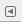

| 2. Κύρια παράθυρα | ||
|---|---|---|
 |
Κεφάλαιο 3. Πρώτα βήματα με τον Wilber |  |
| 2. Κύρια παράθυρα | ||
|---|---|---|
| |
Κεφάλαιο 3. Πρώτα βήματα με τον Wilber | |
Τα παραπάνω στιγμιότυπα δείχνουν την πιο βασική διάταξη παραθύρων του GIMP που μπορεί να χρησιμοποιηθεί αποτελεσματικά.
Η βασική εργαλειοθήκη: Περιέχει ένα σύνολο πλήκτρων εικονιδίων που χρησιμοποιούνται για επιλογή εργαλείων. Μπορεί επίσης να περιέχει τα χρώματα προσκηνίου και παρασκηνίου, πινέλα, μοτίβα και διαβαθμίσεις και μια απεικόνιση της ενεργού εικόνας. Χρησιμοποιήστε → → για ενεργοποίηση ή απενεργοποίηση των επιπλέον αντικειμένων.
Επιλογές εργαλείων: Προσαρτημένος κάτω από την κύρια εργαλειοθήκη είναι ο διάλογος επιλογών εργαλείου που δείχνει επιλογές για το πρόσφατα επιλεγμένο εργαλείο (σε αυτή την περίπτωση, το εργαλείο μουτζούρας).
Ένα παράθυρο εικόνας: Κάθε εικόνα που ανοίγει στο GIMP εμφανίζεται σε ξεχωριστό παράθυρο. Πολλές εικόνες μπορεί να είναι ανοικτές ταυτόχρονα, περιοριζόμενες μόνο από τους πόρους του συστήματος. Πριν να μπορείτε να κάνετε οτιδήποτε χρήσιμο στο GIMP, πρέπει να έχετε τουλάχιστον ένα παράθυρο εικόνας ανοικτό. Το παράθυρο εικόνας κρατά το μενού των κύριων εντολών του GIMP (Αρχείο, Επεξεργασία, επιλογή ...), που μπορείτε επίσης να χρησιμοποιήσετε δεξιοπατώντας στο παράθυρο.
Το αγκίστρι (dock) Στρώσεις, Κανάλια, Μονοπάτια με το διάλογο στρώσεων ανοικτό. Σημειώστε ότι οι “διάλογοι” στο “αγκίστρι (dock)” είναι καρτέλες. Αυτό το παράθυρο διαλόγου δείχνει τη δομή της στρώσης της τρέχουσας ενεργού εικόνας, και επιτρέπει το χειρισμό της με ποικίλους τρόπους. Είναι δυνατόν να μερικά βασικά πράγματα χωρίς τη χρήση του διαλόγου στρώσεων, αλλά ακόμα και οι μέτρια προχωρημένοι χρήστες το του GIMP βρίσκουν απαραίτητο να έχουν το διάλογο στρώσεων πάντοτε διαθέσιμο.
Πινέλα, Μοτίβα, Διαβαθμίσεις: Ο προσαρτημένος διάλογος κάτω από διάλογο στρώσεων δείχνει τους διαλόγους (καρτέλες) για το χειρισμό πινέλων, μοτίβων και διαβαθμίσεων.
Αυτή είναι η ελαχιστοποιημένη εγκατάσταση. Υπάρχουν πολλοί άλλοι τύποι διαλόγου χρησιμοποιούμενοι από το GIMP για ποικίλους σκοπούς, αλλά οι χρήστες τυπικά τους ανοίγουν όταν τους χρειάζονται και τους κλείνουν όταν τελειώνουν. Καταρτισμένοι χρήστες κρατούν γενικά την εργαλειοθήκη (με επιλογές εργαλείου) και το διάλογο στρώσεων πάντοτε ανοικτό. Η εργαλειοθήκη είναι απαραίτητη σε πολλές λειτουργίες του GIMP. Στην πραγματικότητα, εάν την κλείσεις το GIMP θα κλείσει, αφού επιβεβαιώσει ότι αυτό είναι πραγματικά που θέλετε. Το τμήμα επιλογές εργαλείου είναι στην πραγματικότητα ένας ξεχωριστός διάλογος, που δείχνει προσαρτημένος στην κύρια εργαλειοθήκη στο στιγμιότυπο. Πεπειραμένοι χρήστες σχεδόν πάντοτε το εγκαθιστούν έτσι: Είναι πολύ δύσκολο να χρησιμοποιηθούν αποτελεσματικά τα εργαλεία χωρίς να βλέπει κανείς τις επιλογές. Ο διάλογος στρώσεων ενεργοποιείται, όταν δουλεύετε με μια εικόνα με πολλαπλές στρώσεις: αφού προχωρήσετε πέρα από τα πιο βασικά στάδια εκμάθησης του GIMP που σημαίνει σχεδόν πάντα. Φυσικά βοηθά και στην εμφάνιση των εικόνων που επεξεργάζεσθε στην οθόνη, εάν κλείσετε το παράθυρο της εικόνας πριν την αποθήκευση της εργασίας σας. Το GIMP θα ρωτήσει εάν θέλετε να κλείσετε το αρχείο.
![[Σημείωση]](images/note.png)
|
Σημείωση |
|---|---|
|
Εάν η διάταξη του GIMP χαθεί, οι ρυθμίσεις σας είναι εύκολο να ανακτηθούν χρησιμοποιώντας → Η εντολή μενού των παραθύρων είναι διαθέσιμη μόνο όσο η εικόνα είναι ανοικτή. Για προσθήκη, κλείσιμο ή απόσπαση μιας καρτέλας από αγκίστρι, πατήστε  στην πάνω δεξιά γωνία του διαλόγου. Αυτό ανοίγει το μενού καρτελών. Επιλέξτε ,, ή . |
Το GIMP δεν υποστηρίζει την τοποθέτηση όλων των εικόνων και ελέγχων σε ένα μοναδικό περιεκτικό παράθυρο. Η αποδοχή στην κοινότητα του GIMP είναι ότι τα πολλαπλά παράθυρα προσφέρουν μια καλύτερη εμπειρία χρήστη και ένα μοναδικό παράθυρο είναι δύσκολο να γίνει με τρόπο που να δουλεύει σωστά σε όλα τα λειτουργικά συστήματα στα οποία τρέχει το GIMP.
Προηγούμενες εκδόσεις του GIMP (μέχρι το GIMP 1.2.5) χρησιμοποιούσαν πολλούς διαλόγους: προχωρημένοι χρήστες συχνά είχαν πολλούς διαλόγους ανοιχτούς ταυτόχρονα, διασπαρμένους σε όλη την οθόνη και πολύ δύσκολα εντοπίσιμους. Το GIMP 2.0 είναι πολύ καλύτερο από αυτή την άποψη, επειδή επιτρέπει οι διάλογοι να προσαρτώνται μαζί με ένα ευλύγιστο τρόπο. (Ο διάλογος στρώσεων στο στιγμιότυπο στην πραγματικότητα περιέχει τέσσερις διαλόγους, παρουσιαζόμενους από καρτέλες: Στρώσεις, Κανάλια, Μονοπάτια και Αναιρέσεις.) Το σύστημα χρειάζεται λίγο για εκμάθηση, αλλά άμα το μάθετε, ελπίζουμε ότι θα σας αρέσει.
Τα παρακάτω τμήματα θα σας οδηγήσουν μέσα από τα συστατικά καθενός παραθύρου που φαίνεται στο στιγμιότυπο, εξηγώντας τι είναι και πώς δουλεύει. Όταν τα μελετήσετε, καθώς και το τμήμα που περιγράφει τη βασική δομή των εικόνων του GIMP, πρέπει να έχετε μάθει αρκετά για χρησιμοποιήσετε το GIMP για μια μεγάλη ποικιλία των βασικών χειρισμών εικόνας. Τότε μπορείτε να κοιτάξετε το υπόλοιπο του εγχειριδίου με την ησυχία σας (ή απλά για να πειραματιστείτε) για να μάθετε τον σχεδόν απεριόριστο αριθμό περισσότερων λεπτών και εξειδικευμένων πραγμάτων που είναι δυνατά. Καλή διασκέδαση!
Η εργαλειοθήκη είναι η καρδιά του GIMP. Εάν την κλείσετε, εγκαταλείπετε το GIMP. Να μια γρήγορη περιδιάβαση του τι θα βρείτε εκεί.
![[Συμβουλή]](images/tip.png)
|
Συμβουλή |
|---|---|
|
Στην εργαλειοθήκη, όπως και στα περισσότερα μέρη του GIMP, η μετακίνηση του ποντικιού πάνω από κάτι η εναπόθεση του για μια στιγμή, συνήθως εμφανίζει μια “συμβουλή εργαλείου” που περιγράφει το αντικείμενο. Πλήκτρα συντομεύσεων εμφανίζονται επίσης συχνά στη συμβουλή εργαλείων. Σε πολλές περιπτώσεις η αιώρηση του ποντικιού πάνω από ένα αντικείμενο και το πάτημα του πλήκτρου F1 είναι βοήθεια για ένα αντικείμενο που είναι κάτω από το ποντίκι. |
Εικόνες εργαλείων: Αυτές οι εικόνες είναι κουμπιά που ενεργοποιούν εργαλεία για μια μεγάλη ποικιλία σκοπών: επιλογή μερών της εικόνας, χρώση μιας εικόνας, μετασχηματισμός μιας εικόνας κλ. Ενότητα 1, “Η εργαλειοθήκη” δίνει μια επισκόπηση εργασίας με εργαλεία και κάθε εργαλείο περιγράφεται συστηματικά στο κεφάλαιο Εργαλεία.
Χρώματα προσκηνίου/παρασκηνίου: Οι περιοχές χρωμάτων εδώ σας δείχνουν τα τρέχοντα χρώματα προσκηνίου και παρασκηνίου του GIMP, που ενεργοποιείται σε πολλές λειτουργίες. Πατώντας σε οποιοδήποτε από τα δύο φέρνει το διάλογο επιλογής χρώματος που σας επιτρέπει αλλαγή σε άλλο χρώμα. Πατώντας στο διπλοκέφαλο βέλος εναλλάσσει τα δύο χρώματα, και πατώντας στο μικρό εικονίδιο στην κάτω αριστερή γωνία, τα επαναφέρει σε μαύρο και άσπρο.
Πινέλο/Μοτίβα/διαβάθμιση: Τα σύμβολα εδώ σας δείχνουν τις τρέχουσες επιλογές του GIMP για: το πινέλο που χρησιμοποιείται από όλα τα εργαλεία που σας επιτρέπουν να σχεδιάσετε στην εικόνα (“Η σχεδίαση” συμπεριλαμβάνει λειτουργίες όπως σβήσιμο και μουτζούρωμα). Τα μοτίβα που χρησιμοποιούνται στην πλήρωση επιλεγμένων περιοχών της εικόνας. Οι διαβαθμίσεις που ενεργοποιούνται όταν μια λειτουργία απαιτεί μια ήπια μεταβαλλόμενη κλίμακα χρωμάτων. Πατώντας σε οποιοδήποτε από αυτά τα σύμβολα εμφανίζει ένα παράθυρο διαλόγου που σας επιτρέπει να το αλλάξετε.
Ενεργή Εικόνα: Στο GIMP, μπορείτε να εργαστείτε με πολλές εικόνες ταυτόχρονα, αλλά σε δεδομένη χρονική στιγμή, μόνο μια εικόνα είναι η “ενεργή εικόνα”. Εδώ θα βρείτε μια μικρή σχηματική αναπαράσταση της ενεργού εικόνας. Πατώντας την εικόνα εμφανίζεται ένας διάλογος με έναν κατάλογο των τρεχουσών ανοικτών εικόνων, πατώντας σε μια εικόνα στο διάλογο, κάνει την εικόνα ενεργή. Μπορείτε επίσης να πατήσετε στο παράθυρο της εικόνας για να την κάνετε ενεργή.
|
|
Σημείωση |
|---|---|
|
Η προεπισκόπηση της “Ενεργής Εικόνας” απενεργοποιείται από προεπιλογή. Εάν θέλετε, μπορείτε να την ενεργοποιήσετε στην καρτέλα Προτιμήσεις Εργαλειοθήκης. |
|
|
Σημείωση |
|---|---|
|
Σε κάθε εκκίνηση το GIMP επιλέγει ένα εργαλείο (το πινέλο), ένα χρώμα, μια μύτη πινέλου και ένα μοτίβο από προεπιλογή, πάντα το ίδιο. Εάν θέλετε το GIMP να επιλέγει το τελευταίο εργαλείο, χρώμα, πινέλο και μοτίβο που χρησιμοποιήσατε, όταν αφήνατε την προηγούμενη σύνοδο, επιλέξτε το Αποθήκευση ρυθμίσεων συσκευής εισόδου τώρα στο Προτιμήσεις/ Συσκευές Εισόδου. |
|
|
Συμβουλή |
|---|---|
|
Το παράθυρο της εργαλειοθήκης εμφανίζει “τα μάτια του Wilber”
κατά μήκος της κορυφής του διαλόγου. Μπορείτε να απαλλαγείτε από “
τα μάτια του Wilber” προσθέτοντας την παρακάτω γραμμή στο αρχείο σας |
|
|
Συμβουλή |
|---|---|
|
Σύρσιμο και απόθεση μιας εικόνας στο παράθυρο εργαλειοθήκης για άνοιγμα της εικόνας στο δικό της παράθυρο. Αυτό είναι πολύ διαφορετικό από το σύρσιμο μιας εικόνας σε ένα υπάρχον παράθυρο εικόνας, που το προσθέτει στην τρέχουσα ανοικτή εικόνα σε μια καινούργια στρώση που συνήθως δεν θέλετε. |